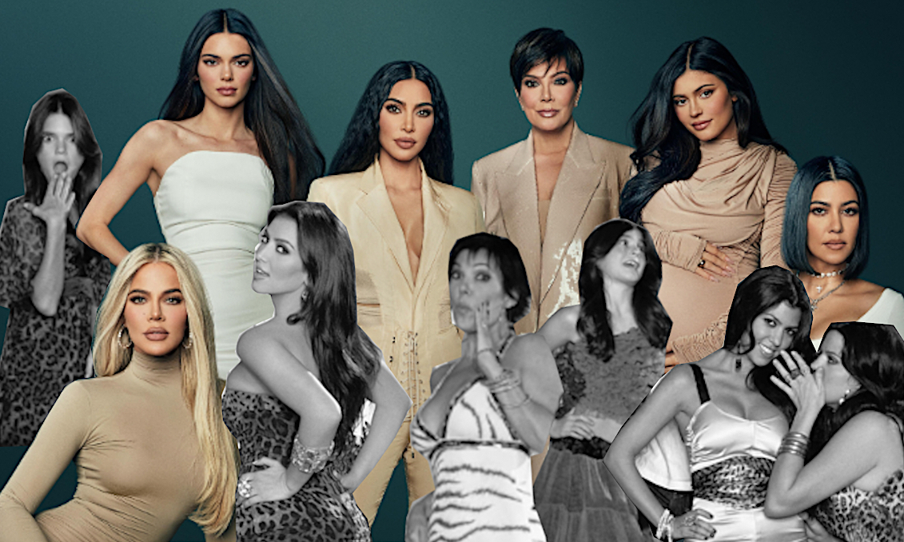

The Kardashians Trend Cycle
This interactive data story lets you explore a trip to Thailand from a statistics standpoint. Some insights from 2010's data by Thailand's Ministry of Tourism and Sports.
Link to the project on Tableau Public.
Watching Keeping Up With The Kardashians has been my guilty pleasure for many years. This reality show has been running for 16 years. It has made Kardashian-Jenners one of the world's most recognizable and influential families. All family members have hundreds of millions of followers on social media, successful business empires, and huge commercial contracts. However, they are still shooting a reality TV show, the format which seems a bit outdated nowadays. The Google Trends' popularity index for 'Kardashians' shows that since the family's first TV appearance public interest was cyclically going up and down. In this work, I tried to define what happened on the show or in the family's life so that the audience's attention was brought back.
The chart is a popularity index timeline with interactive points at its peaks. To make the tooltip more engaging, I have decided to add pictures to it. There is no simple tool for that in Tableau, so I used this method by Ryan Sleeper.
P.S. The topic may seem shallow, useless, and not serious. However, the creation process was enjoyable, and I learned some new things. Sounds like a success to me :)